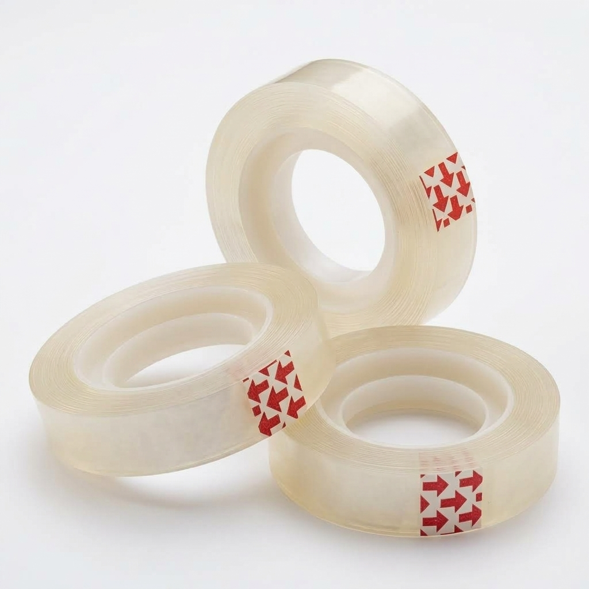
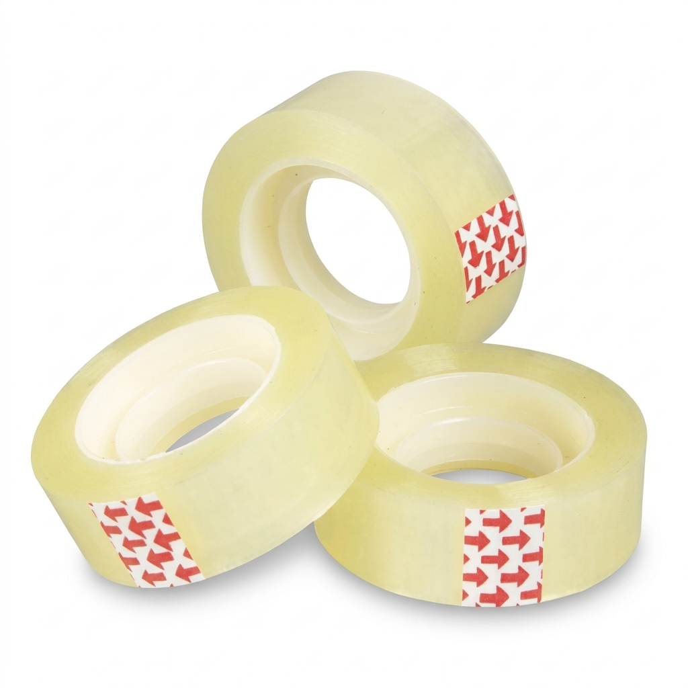
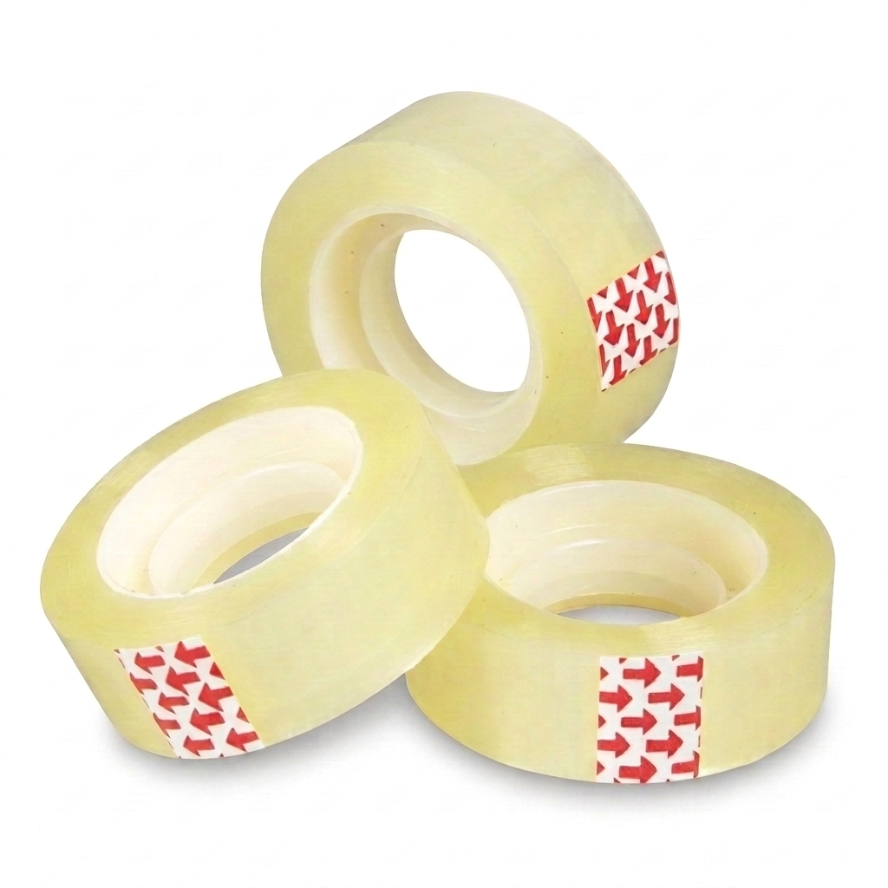

Скотч канцелярський 12 мм х 20 ярд
Код: 020
Канцелярський скотч — один з найпопулярніших видів липких стрічок для офісу та побуту.
📏 12 мм х 20 ярд
📦 В ящику: 720 шт
1 грн / шт

Скотч канцелярський 12 мм х 30 ярд
Код: 021
Канцелярський скотч — один з найпопулярніших видів липких стрічок для офісу та побуту.
📏 12 мм х 30 ярд
📦 В ящику: 720 шт
1.5 грн / шт

Скотч канцелярський 18 мм х 20 ярд
Код: 022
Канцелярський скотч — один з найпопулярніших видів липких стрічок для офісу та побуту.
📏 18 мм х 20 ярд
📦 В ящику: 480 шт
1.5 грн / шт

Скотч канцелярський 18 мм х 30 ярд
Код: 023
Канцелярський скотч — один з найпопулярніших видів липких стрічок для офісу та побуту.
📏 18 мм х 30 ярд
📦 В ящику: 480 шт
2 грн / шт

Скотч канцелярський 24 мм х 20 ярд
Код: 024
Канцелярський скотч — один з найпопулярніших видів липких стрічок для офісу та побуту.
📏 24 мм х 20 ярд
📦 В ящику: 360 шт
2 грн / шт

Скотч канцелярський 24 мм х 30 ярд
Код: 025
Канцелярський скотч — один з найпопулярніших видів липких стрічок для офісу та побуту.
📏 24 мм х 30 ярд
📦 В ящику: 360 шт
3 грн / шт